Adding sheet metal deformation features
You can model features in the Sheet Metal environment that are manufactured with metal deformation techniques, such as deep drawing and coining. When parts are manufactured using deformation techniques, material thinning typically occurs. In Solid Edge, this material thinning is ignored and deformation features are constructed using the same material thickness specified for the model.
Adding deformation features across bends
In the ordered environment, you can add deformation features, such as beads, dimples, and drawn cutouts across a bend created in version ST6 or later.
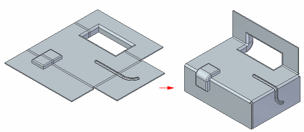
You can also create a louver that lies completely inside a bend region.
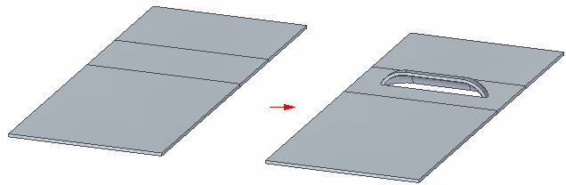
Deformation features can only be created across a bend when the bend is in the unbent state. Also, if there is a flat in the file then it needs to be deleted and recreated.
Adding deformation features across a bend: workflow
-
Unbend the bend or bends that the deformation feature will cross.
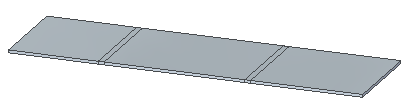
-
Create the deformation feature.
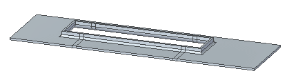
-
Rebend the unbent portions of the model.
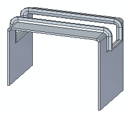
You can create deformation features across either the inside face (A) or the outside face (B) of a bend.
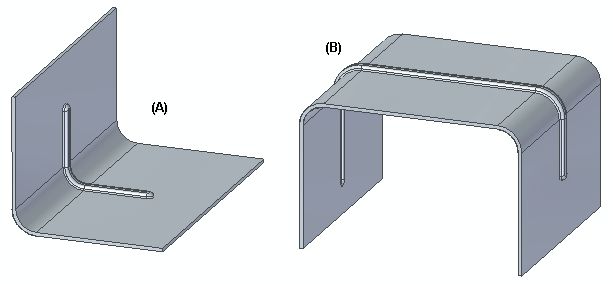
Note:If the deformation feature is a bead, it can be either parallel (A) or nonparallel (B).
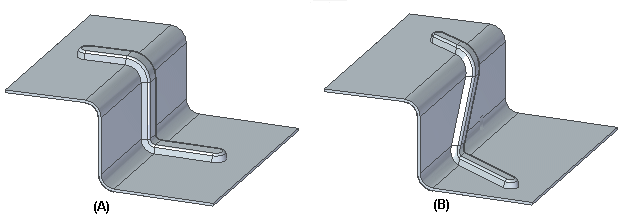
The deformation feature can also lie completely inside the bend region.
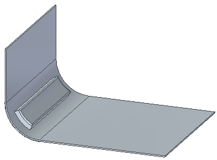
For deformation features inside the face, the depth of the deformation feature crossing the bend must be smaller than the associated bend radius. In cases where the deformation feature crosses multiple bends, the depth of the bead must be smaller than the smallest bend radius in the group.
For example, if a bead crosses a bend with a bend radius of 6 mm (A) and a bend with a bend radius of 10 mm (B).
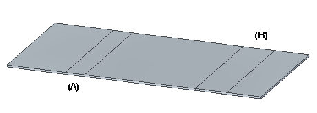
the bead depth must be less than 6 mm. In this case the bead depth is 5 mm.
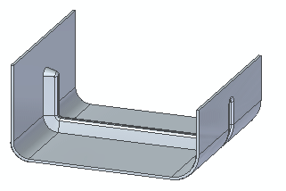
For bends outside the face, the depth of the deformation can be greater than the smallest bend radius in the group. In the following example, the smallest bend radius is 5 mm, but the depth of the drawn cutout is 10 mm.
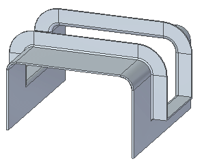
When creating a dimple or drawn cutout across a bend, the feature can be created with either a closed profile,
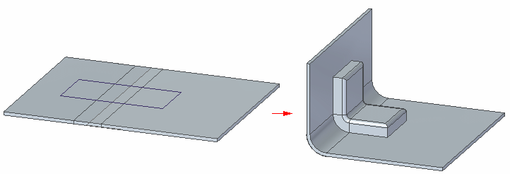
or with an open profile.
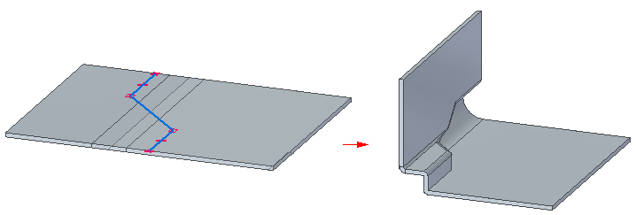
Editing deformation features across and within bends
-
The Edit Definition, Edit Profile, and Dynamic Edit commands are available for deformation features that extend across or lie within a bend. The workflow for editing deformation features does not change for these type of deformation features.
Inserting bends across deformation features
-
In addition to creating a deformation feature across a bend, you can use the Bend command to insert a bend across existing deformation features, For example, the following model consists of three louvers created on a tab.
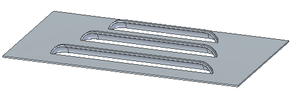
Using the Bend command, you can create a bend that crosses the louvers.
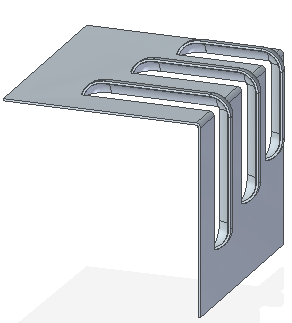
While you cannot insert a deformation feature across a bend created in a version prior to ST6, you can insert a bend across a deformation feature created prior to 2023. For example, the model consists of two dimples created on a tab in a version prior to 2023.
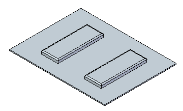
Using the Bend command in version 2023 or later, you can create a bend that crosses the dimples.
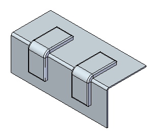
Note:When creating a bend across a deformation feature, the bend line must extend completely across the feature.
Flattening deformation features
-
You can also flatten deformation features, such as dimples, on bends.
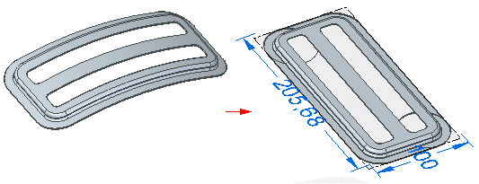